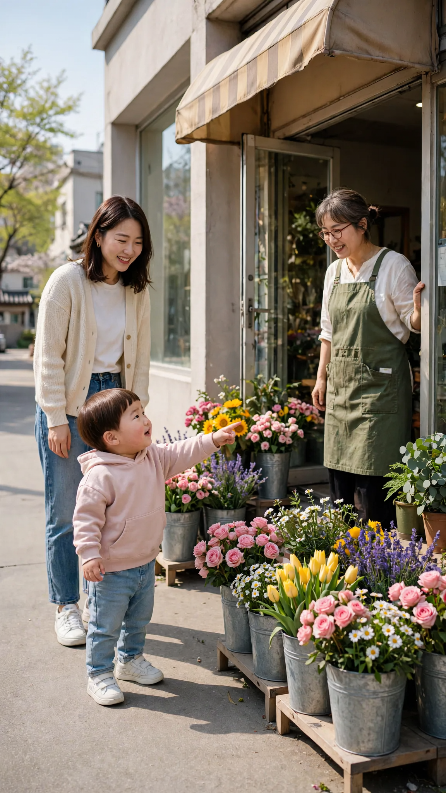
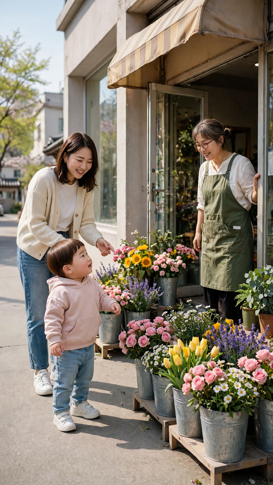
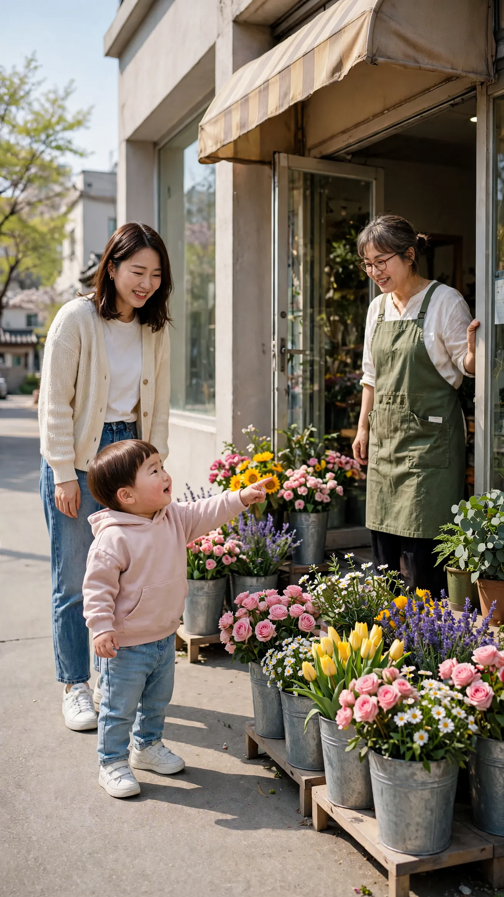
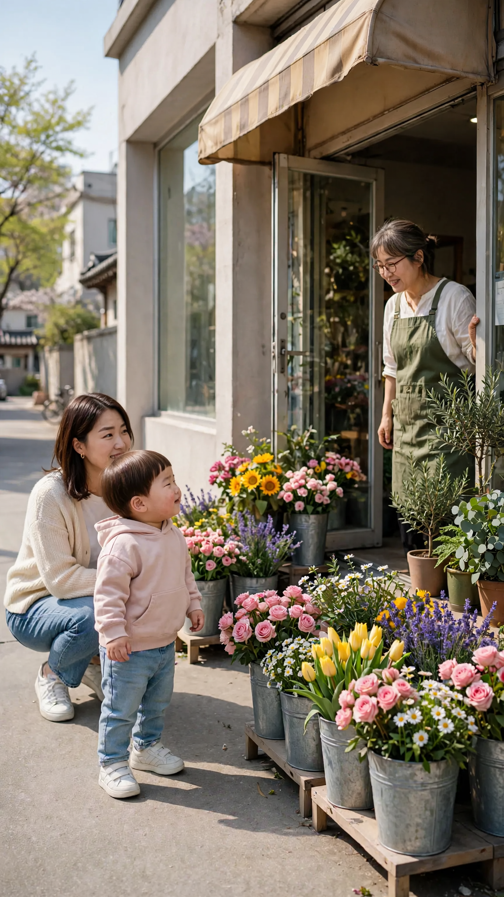
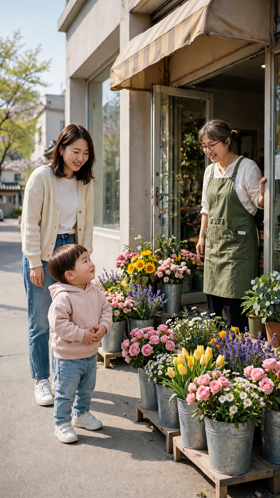
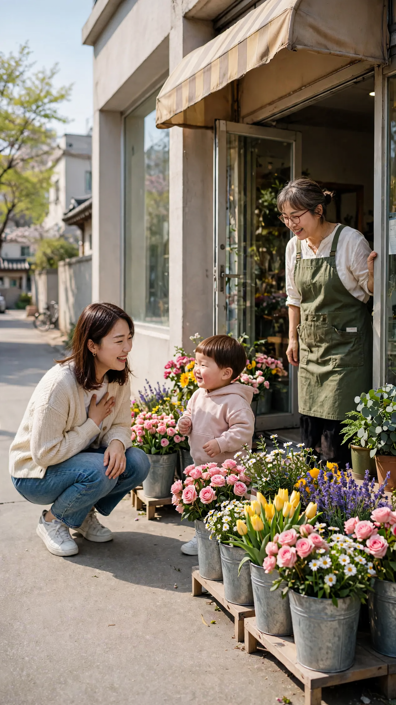

🎬 엄마한테는 비밀이라는 두 살
9컷 · 38초 · 🟦 표시 컷은 도윤이 입 다묾 · 실패하면 같은 걸로 2~3번 다시 걸기
1번 컷
⏱ 4초도윤: 「이모~ 여기 꽃 많아!」


[Character Action & Continuity] Realistic Korean slice-of-life short video clip. the sidewalk in front of a small Korean neighborhood flower shop in Korea. Maintain exact appearance from start frame: a 24-month-old Korean toddler boy wearing a light pink hooded sweatshirt, light blue jeans and small white sneakers. Scale: a small 24-month-old toddler build with natural proportions. [0-3s] Doyoon points at the flowers and says his line right away to his aunt, excited [3-4s] Doyoon bounces on his toes with a big smile [Dialogue Script & Emotion] 도윤 (단독 발화, 0초부터 바로): (신나서 들뜬 목소리로) "이모~ 요기 꽃 많아!" [Audio & Voice Specifications] Single Voice Track Only: Definite 18 to 24-month-old Korean INFANT TODDLER boy voice. Low-pitched, cute, raspy little boy toddler voice. Strictly NOT a school-age child, NOT female. Sound Format: Solo toddler voice in a quiet room. Background Sound: Quiet indoor room tone. Continuous steady indoor room air. [Technical Directives] 카메라: 꽃집 앞 도윤이와 이모, 사장님이 보이는 미디엄 샷. 카메라 고정. 화면: 도윤이와 이모, 꽃집 사장님, 꽃집만 보인다. 벽과 가구 표면은 무늬 없이 비어 있다. 도윤이 입모양 100% 완벽 립싱크.
2번 컷
⏱ 4초🟦 이모: 「여기는 꽃집이야. 꽃을 팔아.」


[Character Action & Continuity] Realistic Korean slice-of-life short video clip. the sidewalk in front of a small Korean neighborhood flower shop in Korea. Maintain exact appearance from start frame: a 24-month-old Korean toddler boy wearing a light pink hooded sweatshirt, light blue jeans and small white sneakers. Scale: a small 24-month-old toddler build with natural proportions. Fixed positions: Doyoon mid-sidewalk by the flowers, aunt at his left, florist by the door on the right. Doyoon stays silent looking at his aunt; only the aunt speaks. [0-3s] the aunt bends toward Doyoon and says her line right away, gesturing at the shop [3-4s] Doyoon nods, looking at the flowers with wide eyes [Dialogue Script & Emotion] 이모, 0초부터 바로: (다정하게 알려 주듯) "여기는 꽃집이야. 꽃을 팔아." [Audio & Voice Specifications] Single Voice Track Only: One Korean woman in her late 20s, the boy's aunt, playful warm teasing voice. Sound Format: One adult woman voice on a quiet street. Background Sound: Quiet indoor room tone. Continuous steady indoor room air. [Technical Directives] 카메라: 꽃집 앞 도윤이와 이모, 사장님이 보이는 미디엄 샷. 카메라 고정. 화면: 도윤이와 이모, 꽃집 사장님, 꽃집만 보인다. 벽과 가구 표면은 무늬 없이 비어 있다. 말소리는 이모 목소리 하나, 도윤이는 입을 다문다.
3번 컷
⏱ 4초도윤: 「도윤이 꽃 볼래.」


[Character Action & Continuity] Realistic Korean slice-of-life short video clip. the sidewalk in front of a small Korean neighborhood flower shop in Korea. Maintain exact appearance from start frame: a 24-month-old Korean toddler boy wearing a light pink hooded sweatshirt, light blue jeans and small white sneakers. Scale: a small 24-month-old toddler build with natural proportions. Fixed positions: Doyoon mid-sidewalk by the flowers, aunt at his left, florist by the door on the right. [0-3s] Doyoon turns to his aunt and says his line right away, eager [3-4s] Doyoon toddles one step toward the flower buckets with a happy face [Dialogue Script & Emotion] 도윤 (단독 발화, 0초부터 바로): (졸라 대듯 신나서) "도유니 꽃 볼래." [Audio & Voice Specifications] Single Voice Track Only: Definite 18 to 24-month-old Korean INFANT TODDLER boy voice. Low-pitched, cute, raspy little boy toddler voice. Strictly NOT a school-age child, NOT female. Sound Format: Solo toddler voice in a quiet room. Background Sound: Quiet indoor room tone. Continuous steady indoor room air. [Technical Directives] 카메라: 꽃집 앞 도윤이와 이모, 사장님이 보이는 미디엄 샷. 카메라 고정. 화면: 도윤이와 이모, 꽃집 사장님, 꽃집만 보인다. 벽과 가구 표면은 무늬 없이 비어 있다. 도윤이 입모양 100% 완벽 립싱크.
4번 컷
⏱ 4초🟦 꽃집 사장님: 「귀여운 애기가 왔네~ 뭐 줄까?」

[Character Action & Continuity] Realistic Korean slice-of-life short video clip. the sidewalk in front of a small Korean neighborhood flower shop in Korea. Maintain exact appearance from start frame: a 24-month-old Korean toddler boy wearing a light pink hooded sweatshirt, light blue jeans and small white sneakers. Scale: a small 24-month-old toddler build with natural proportions. Fixed positions: Doyoon mid-sidewalk by the flowers, aunt at his left, florist by the door on the right. Doyoon stays silent looking up at the florist; only the florist speaks. [0-3s] the florist leans toward Doyoon and says her line right away with a big warm smile [3-4s] Doyoon looks up at her with shy, sparkling eyes [Dialogue Script & Emotion] 꽃집 사장님, 0초부터 바로: (반갑고 다정하게) "귀여운 애기가 왔네~ 뭐 줄까?" [Audio & Voice Specifications] Single Voice Track Only: One Korean woman florist in her 50s, cheerful kind voice. Sound Format: One adult woman voice on a quiet street. Background Sound: Quiet indoor room tone. Continuous steady indoor room air. [Technical Directives] 카메라: 꽃집 앞 도윤이와 이모, 사장님이 보이는 미디엄 샷. 카메라 고정. 화면: 도윤이와 이모, 꽃집 사장님, 꽃집만 보인다. 벽과 가구 표면은 무늬 없이 비어 있다. 말소리는 꽃집 사장님 목소리 하나, 도윤이는 입을 다문다.
5번 컷
⏱ 4초도윤: 「이거 예뻐요. 이거 주세요.」

[Character Action & Continuity] Realistic Korean slice-of-life short video clip. the sidewalk in front of a small Korean neighborhood flower shop in Korea. Maintain exact appearance from start frame: a 24-month-old Korean toddler boy wearing a light pink hooded sweatshirt, light blue jeans and small white sneakers. Scale: a small 24-month-old toddler build with natural proportions. Fixed positions: Doyoon mid-sidewalk by the flowers, aunt at his left, florist by the door on the right. [0-3s] Doyoon points at the pink roses and says his line right away to the florist, polite and sweet [3-4s] Doyoon nods firmly, still pointing [Dialogue Script & Emotion] 도윤 (단독 발화, 0초부터 바로): (공손하고 또박또박하게) "이거 예뻐요. 이거 듀세요." [Audio & Voice Specifications] Single Voice Track Only: Definite 18 to 24-month-old Korean INFANT TODDLER boy voice. Low-pitched, cute, raspy little boy toddler voice. Strictly NOT a school-age child, NOT female. Sound Format: Solo toddler voice in a quiet room. Background Sound: Quiet indoor room tone. Continuous steady indoor room air. [Technical Directives] 카메라: 꽃집 앞 도윤이와 이모, 사장님이 보이는 미디엄 샷. 카메라 고정. 화면: 도윤이와 이모, 꽃집 사장님, 꽃집만 보인다. 벽과 가구 표면은 무늬 없이 비어 있다. 도윤이 입모양 100% 완벽 립싱크.
6번 컷
⏱ 4초🟦 이모: 「도윤이 돈 있어?」


[Character Action & Continuity] Realistic Korean slice-of-life short video clip. the sidewalk in front of a small Korean neighborhood flower shop in Korea. Maintain exact appearance from start frame: a 24-month-old Korean toddler boy wearing a light pink hooded sweatshirt, light blue jeans and small white sneakers. Scale: a small 24-month-old toddler build with natural proportions. Fixed positions: Doyoon mid-sidewalk by the flowers, aunt at his left, florist by the door on the right. Doyoon stays silent looking at his aunt; only the aunt speaks. [0-3s] the aunt says her line right away with a playful teasing smile [3-4s] Doyoon blinks and looks down at his own hands [Dialogue Script & Emotion] 이모, 0초부터 바로: (장난스럽게 놀리듯) "도윤이 돈 있어?" [Audio & Voice Specifications] Single Voice Track Only: One Korean woman in her late 20s, the boy's aunt, playful warm teasing voice. Sound Format: One adult woman voice on a quiet street. Background Sound: Quiet indoor room tone. Continuous steady indoor room air. [Technical Directives] 카메라: 꽃집 앞 도윤이와 이모, 사장님이 보이는 미디엄 샷. 카메라 고정. 화면: 도윤이와 이모, 꽃집 사장님, 꽃집만 보인다. 벽과 가구 표면은 무늬 없이 비어 있다. 말소리는 이모 목소리 하나, 도윤이는 입을 다문다.
7번 컷
⏱ 6초도윤: 「돈은 엄마한테 있는데… 이모 주고 싶은데.」


[Character Action & Continuity] Realistic Korean slice-of-life short video clip. the sidewalk in front of a small Korean neighborhood flower shop in Korea. Maintain exact appearance from start frame: a 24-month-old Korean toddler boy wearing a light pink hooded sweatshirt, light blue jeans and small white sneakers. Scale: a small 24-month-old toddler build with natural proportions. Fixed positions: Doyoon mid-sidewalk by the flowers, aunt at his left, florist by the door on the right. [0-4s] Doyoon looks up at his aunt and says his line right away, shy and sincere [4-6s] Doyoon gives a small shy smile [Dialogue Script & Emotion] 도윤 (단독 발화, 0초부터 바로): (수줍게 머뭇거리며 진심으로) "돈은 엄마한테 있는데… 이모 주고 싶은데." [Audio & Voice Specifications] Single Voice Track Only: Definite 18 to 24-month-old Korean INFANT TODDLER boy voice. Low-pitched, cute, raspy little boy toddler voice. Strictly NOT a school-age child, NOT female. Sound Format: Solo toddler voice in a quiet room. Background Sound: Quiet indoor room tone. Continuous steady indoor room air. [Technical Directives] 카메라: 꽃집 앞 도윤이와 이모, 사장님이 보이는 미디엄 샷. 카메라 고정. 화면: 도윤이와 이모, 꽃집 사장님, 꽃집만 보인다. 벽과 가구 표면은 무늬 없이 비어 있다. 도윤이 입모양 100% 완벽 립싱크.
8번 컷
⏱ 4초🟦 이모: 「이모만 줄 거야? 엄마는?」


[Character Action & Continuity] Realistic Korean slice-of-life short video clip. the sidewalk in front of a small Korean neighborhood flower shop in Korea. Maintain exact appearance from start frame: a 24-month-old Korean toddler boy wearing a light pink hooded sweatshirt, light blue jeans and small white sneakers. Scale: a small 24-month-old toddler build with natural proportions. Fixed positions: Doyoon mid-sidewalk by the flowers, aunt at his left, florist by the door on the right. Doyoon stays silent looking at his aunt; only the aunt speaks. [0-3s] the aunt says her line right away, touched and delighted [3-4s] Doyoon tilts his head, thinking [Dialogue Script & Emotion] 이모, 0초부터 바로: (감동해서 들뜬 목소리로) "이모만 줄 거야? 엄마는?" [Audio & Voice Specifications] Single Voice Track Only: One Korean woman in her late 20s, the boy's aunt, playful warm teasing voice. Sound Format: One adult woman voice on a quiet street. Background Sound: Quiet indoor room tone. Continuous steady indoor room air. [Technical Directives] 카메라: 꽃집 앞 도윤이와 이모, 사장님이 보이는 미디엄 샷. 카메라 고정. 화면: 도윤이와 이모, 꽃집 사장님, 꽃집만 보인다. 벽과 가구 표면은 무늬 없이 비어 있다. 말소리는 이모 목소리 하나, 도윤이는 입을 다문다.
9번 컷
⏱ 4초도윤: 「엄마한테는 비밀이야~」

[Character Action & Continuity] Realistic Korean slice-of-life short video clip. the sidewalk in front of a small Korean neighborhood flower shop in Korea. Maintain exact appearance from start frame: a 24-month-old Korean toddler boy wearing a light pink hooded sweatshirt, light blue jeans and small white sneakers. Scale: a small 24-month-old toddler build with natural proportions. Fixed positions: Doyoon mid-sidewalk by the flowers, aunt at his left, florist by the door on the right. [0-3s] Doyoon grins with his hands behind him and says his line right away in a soft whisper [3-4s] Doyoon sways side to side with a big grin [Dialogue Script & Emotion] 도윤 (단독 발화, 0초부터 바로): (손을 등 뒤로 모으고 입꼬리를 올린 채 소곤소곤) "엄마한테는 비밀이야~" [Audio & Voice Specifications] Single Voice Track Only: Definite 18 to 24-month-old Korean INFANT TODDLER boy voice. Low-pitched, cute, raspy little boy toddler voice. Strictly NOT a school-age child, NOT female. Sound Format: Solo toddler voice in a quiet room. Background Sound: Quiet indoor room tone. Continuous steady indoor room air. [Technical Directives] 카메라: 꽃집 앞 도윤이와 이모, 사장님이 보이는 미디엄 샷. 카메라 고정. 화면: 도윤이와 이모, 꽃집 사장님, 꽃집만 보인다. 벽과 가구 표면은 무늬 없이 비어 있다. 도윤이 입모양 100% 완벽 립싱크.